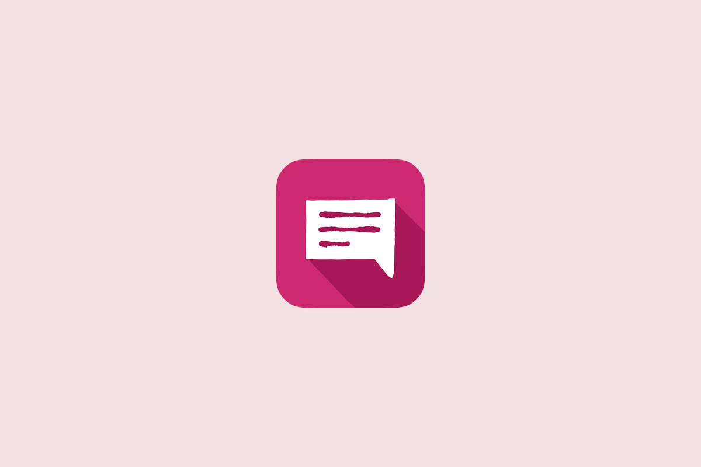

Et ole kurssillasi yksin – nyt näet, keitä muita siellä on
CampusConnectiin on julkaistu uusi palvelu nimeltä Käyntikortit. Se näyttää, ketkä muut opiskelevat samoja kursseja kuin sinä ja kuka heistä on valmis vastaamaan kysymyksiin. Palvelu on tehty erityisesti niille, jotka opiskelevat työn ohella, etänä tai iltaisin eivätkä ehdi tutustua kurssikavereihin kampuksella.
Kurssikaverit näkyviin, vaikka ette koskaan tapaisi
Käyntikorteista löydät listan kursseista, joille olet ilmoittautunut. Kurssin kohdalta näet, kuinka monta opiskelijaa kurssilla on, kuinka moni heistä opiskelee iltaisin ja kuka on merkinnyt itsensä avoimeksi kysymyksille. Jokaisella opiskelijalla on oma käyntikortti, jossa on lyhyt esittely, tyypillinen opiskeluaika ja teidän yhteiset kurssinne.

Omaan käyntikorttiisi voit valita
- oletko avoin muiden opiskelijoiden kysymyksille
- milloin yleensä opiskelet: aamuisin, päivisin, iltaisin tai viikonloppuisin
- lyhyen, enintään 200 merkin esittelyn itsestäsi.
Tietojen täyttäminen on vapaaehtoista, ja ne näkyvät vain samoilla kursseilla oleville. Voit muuttaa valintojasi milloin tahansa profiilissasi.
Kysyminen on helpompaa, kun kutsu on annettu etukäteen
Lähes 40 prosenttia ammattikorkeakouluopiskelijoista ei koe kuuluvansa mihinkään opiskeluun liittyvään ryhmään (THL, KOTT 2024). Käyntikorttien idea syntyi opiskelijahaastatteluista. Moni kertoi jääneensä epäselvän tehtävänannon kanssa yksin, koska ei tiennyt, keneltä kysyä, eikä halunnut vaivata opettajaa turhaan.
”Kurssikaverilta on helppo kysyä, kun tietää, että hän on jo valmiiksi kertonut olevansa tavoitettavissa. Siksi avoimuus kysymyksille valitaan etukäteen”, kertoo palvelun suunnittelija.
Kokeile heti!
Löydät Käyntikortit CampusConnectin Palvelut-välilehdeltä. Voit selata kurssikavereitasi heti, vaikka et täyttäisi omia tietojasi.